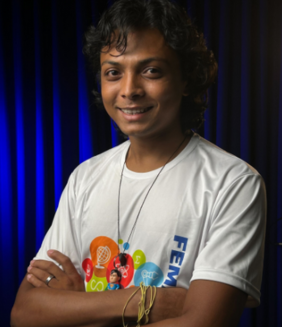

Sobre o evento:
Bem-vindos ao Brasília+TI, o ponto de encontro definitivo para a inovação, o conhecimento e o futuro da tecnologia no coração do Brasil. Mais do que um evento, somos um movimento criado para conectar, capacitar e inspirar a comunidade de Tecnologia da Informação do Distrito Federal e de todo o país. Acreditamos que o talento e o potencial de Brasília como um polo tecnológico estratégico merecem ser celebrados e expandidos.
Nossa Missão
Nossa missão é clara: impulsionar o ecossistema de TI de Brasília. Fazemos isso ao oferecer uma plataforma de alto nível onde profissionais, estudantes, empreendedores e líderes de mercado podem:
- Aprender com palestras e workshops conduzidos pelos nomes mais influentes do setor.
- Conectar-se em um ambiente rico em networking, fomentando parcerias e novas oportunidades de carreira.
- Descobrir as últimas tendências, inovações e soluções que estão moldando o futuro digital
O Que Você Encontrará
A cada edição, o Brasília+TI reúne uma programação diversificada que cobre as áreas mais quentes da tecnologia:
- Inteligência Artificial e Machine Learning: Explorando o impacto e as aplicações práticas dessas tecnologias.
- Cibersegurança: Melhores práticas e defesa contra ameaças digitais em constante evolução.
- Desenvolvimento de Software: Desde arquiteturas modernas até linguagens de programação de ponta.
- Transformação Digital: Estratégias para empresas e o governo na era digital.
- Startups e Inovação: Histórias de sucesso, desafios e oportunidades para novos negócios de tecnologia.
Por Que Participar?
Se você busca crescimento profissional, novas perspectivas de mercado ou apenas deseja fazer parte de uma comunidade vibrante que respira tecnologia, o Brasília+TI é o seu lugar. Venha somar seu conhecimento, trocar experiências e ajudar a construir o futuro da TI a partir de Brasília.
Data e hora:
Nosso evento ocorrerá no dia 19/05/2026 no Centro de Eventos Ulysses Guimarães. A abertura dos portões ocorrerá às 08:00 da manhã. Chegue cedo e aproveite todas as atrações!
Junte-se a nós e seja parte da transformação tecnológica!
Confira abaixo nossa programação para o primeiro dia de evento:
Agenda do Brasília+TI (7ª Edição)
| Horário | Atividade | Palco/Área | Palestrantes/Eventos |
|---|---|---|---|
| 08:00 | Credenciamento | Foyer | Início da recepção dos participantes. |
| 08:30 | Palestra: Uso de Experimentos no Ensino de Física e Matemática | Palco 1 | Domingos dos Santos |
| 09:30 | Abertura Oficial da 7ª Mostra de Tecnologia Brasília Mais TI | Palco 1 | Solenidade com autoridades e líderes do ecossistema de TI. |
| 10:30 | Palestra Magna: Quando robôs começam a pensar? | Palco 2 | Anúncio do desafio de desenvolvimento de soluções para o Governo. |
| 11:00 | Palestra Magna: Quando robôs começam a pensar? | Palco 1 | Wagner Sanchez |
| 13:00 | Painéis e Workshops Temáticos | Diversos Palcos | Seguem a programação específica da tarde com foco em IA, Cibersegurança e Inovação. |
| 14:00 | Palestra Internacional | Palco Principal | Deborah L. Wince-Smith |
| 15:30 | Painel: Medicina do Futuro | Painel de Saúde | Juracy Lacerda |
Conheça nossos Palestrantes:
Domingos dos Santos
Domingos dos Santos dará a largada na série de palestras técnicas, enfatizando a importância da base científica para a inovação. Com o tema "Uso de Experimentos no Ensino de Física e Matemática", ele irá demonstrar como a aplicação prática e o incentivo à curiosidade nas ciências exatas são o alicerce para desenvolver a mão de obra qualificada que a TI tanto precisa. Uma sessão essencial para educadores, estudantes e todos que se preocupam com a formação de futuros talentos.
Wagner Sanchez
Prepare-se para uma viagem ao futuro da inteligência! Wagner Sanchez, renomado especialista e voz influente na área, estará no Brasília+TI para conduzir a Palestra Magna: "Quando robôs começam a pensar?". Ele irá mergulhar nas fronteiras da Inteligência Artificial (IA), explorando seu impacto transformador no mercado de trabalho e na sociedade. Esta é uma oportunidade imperdível para você debater o futuro da inovação e entender como a cognição das máquinas redefinirá nossa realidade.
Deborah L. Wince-Smith
Uma das atrações internacionais mais esperadas, Deborah L. Wince-Smith trará uma perspectiva de liderança global ao evento. Como Presidente e CEO do Conselho de Competitividade dos Estados Unidos, ela apresentará uma análise crucial sobre como as tecnologias emergentes (como IA e IoT) atuam como fatores determinantes na competitividade de nações e empresas. Não perca a chance de ouvir uma das estrategistas mais respeitadas do mundo sobre o futuro econômico e tecnológico.
Juracy Lacerda
Representando as inovações no setor público, Juracy Lacerda trará uma visão de dentro do governo para o evento. O Secretário de Saúde do DF (SES-DF) participará do painel sobre "Medicina do Futuro", onde irá discutir os desafios cruciais da Transformação Digital na Saúde. Ele abordará a urgência da Governança Digital e da integração de dados para modernizar o SUS, oferecendo insights valiosos sobre como a tecnologia pode, de fato, salvar vidas.